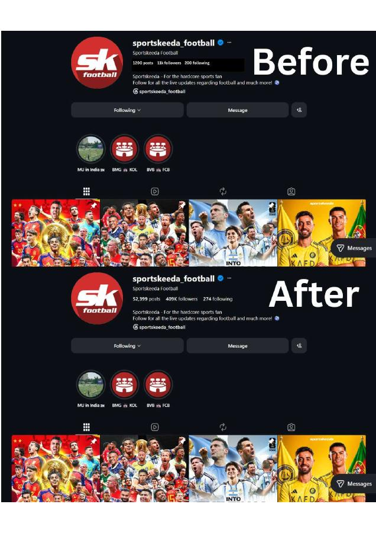
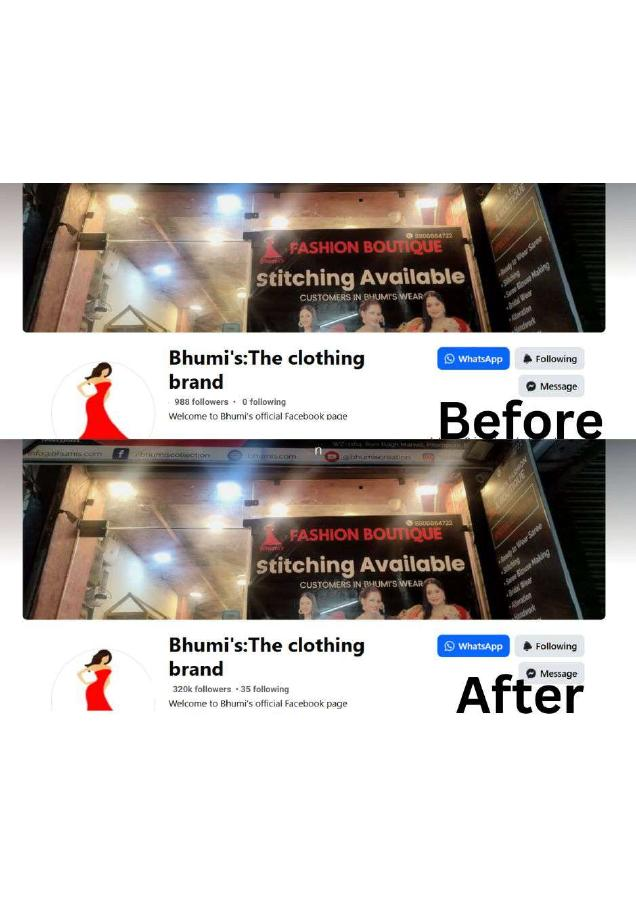
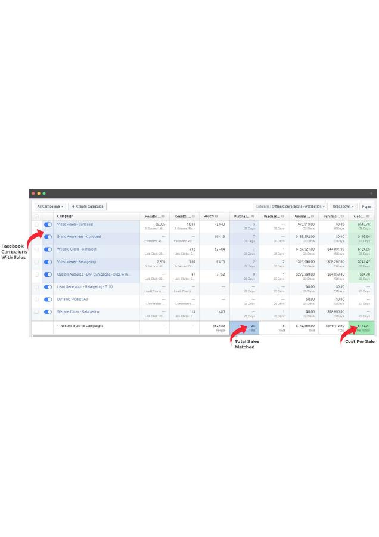
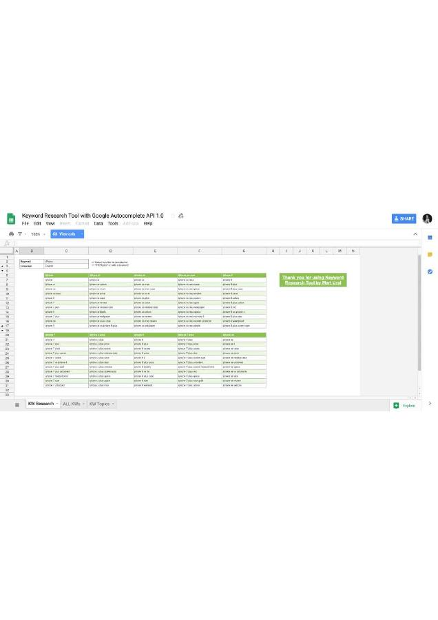
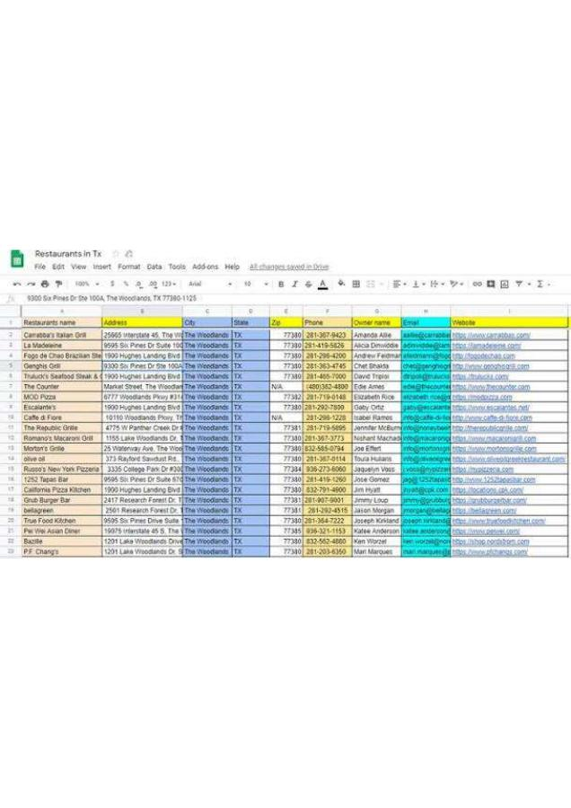
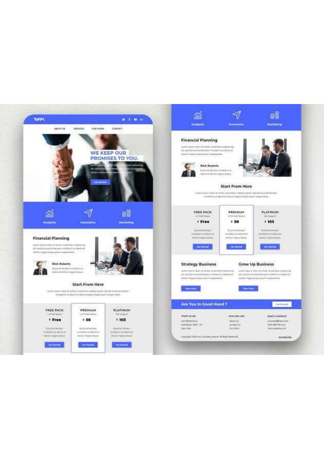
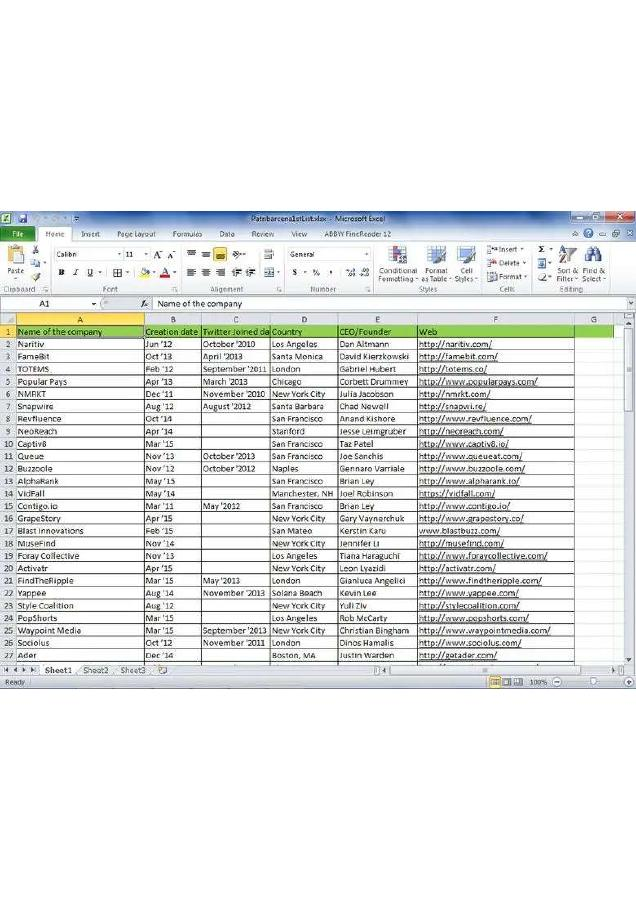
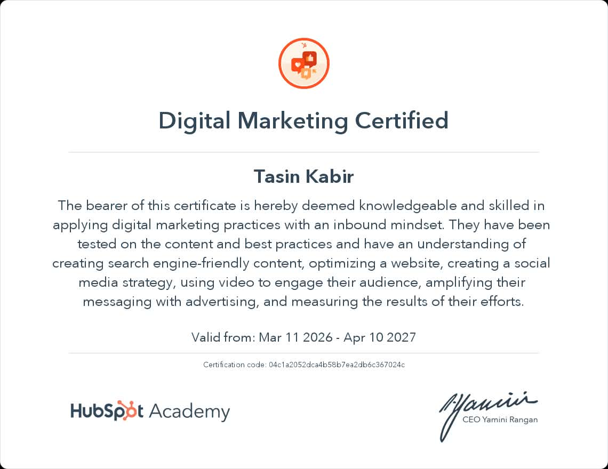

01
Social Media
Content direction, page management, audience research, positioning and platform-specific planning.
DIGITAL MARKETER · FOUNDER · LIFELONG LEARNER
Hi, I’m Tasin. I work across social media, paid advertising, lead generation and content — while building BoostX Marketing Agency one practical project at a time.
ABOUT ME
I’m Tasin Kabir, a digital marketer from Bangladesh. What keeps me interested in marketing is the space between creative ideas and measurable decisions — understanding an audience, finding the right message, building a campaign and then asking what the numbers are telling me.
I’m growing my practical experience while developing BoostX Marketing Agency. I don’t want my work to look complicated just for the sake of looking professional. I want it to be thoughtful, useful and easy for a real business owner to understand.
“I’d rather show how I think, what I’ve built and what I’m learning than pretend I know everything.”
THE AGENCY I’M BUILDING
BoostX Marketing Agency is my space for turning marketing skills into practical business solutions — with a focus on social media, advertising, lead generation, SEO/SEM and content.
My goal is to help businesses move from “we should post more” to a clearer marketing system with a purpose behind every channel.
Discuss a project ↗EXPERTISE
I focus on practical marketing work where strategy, execution and measurement have to connect.
Content direction, page management, audience research, positioning and platform-specific planning.
Meta campaign planning for traffic, messages, leads and conversion-focused objectives.
Prospecting, audience definition, lead capture, qualification and follow-up thinking.
Keyword research, content planning, email concepts and structured marketing research.
SELECTED WORK
These are portfolio pieces from my client work. I’ve presented them as real project deliverables so you can quickly understand the type of marketing work I handle.
Client work: The projects below are examples of marketing deliverables I created for clients. The supporting documents open directly from this website.

01 / CLIENT WORKClient work covering Instagram presence, content direction and audience-focused marketing.
View project ↗
02 / CLIENT WORKClient work focused on Facebook page marketing, content direction and audience engagement.
View project ↗
03 / CLIENT WORKClient work covering campaign structure, ad concepts, audience targeting and performance-focused planning.
View project ↗
04 / CLIENT WORKClient work covering keyword discovery, search intent and content opportunities.
View project ↗
05 / CLIENT WORKClient work involving prospect research, lead qualification and lead-generation workflows.
View project ↗
06 / CLIENT WORKClient work covering email marketing structure, messaging and campaign concepts.
View project ↗
07 / CLIENT WORKClient work involving structured research, data organization and business-ready information.
View project ↗CLIENT CASE STUDIES
These case studies are built from the client deliverables shown in my portfolio. I’ve added the business context, my role, the work completed and the strategic reasoning behind each project — without inventing performance numbers that are not supported by the source files.
How to read these: each case study connects directly to a portfolio deliverable below. Where a source file does not contain verified performance data, I leave the result qualitative rather than making up numbers.
I have worked with clients across these five international markets: India, Malaysia, Nigeria, the UAE and the United Kingdom. My goal is to continue expanding into worldwide client work.
The client work focuses on presenting Bhumi’s as a recognizable clothing brand and shaping the page around a clear brand identity, audience connection and conversion-friendly presence.
The Instagram deliverable is built around a football-focused audience, clear page positioning and content designed to make the account immediately understandable to sports fans.
The supplied campaign work is centered on a sales objective, giving the campaign a clearer business purpose than simply maximizing reach or engagement.
The lead-generation deliverable organizes restaurant prospects in Texas with business details that can support outreach, qualification and follow-up.
The keyword research project uses search discovery, including Google Autocomplete, to identify relevant queries that can later inform content and SEO planning.
The email marketing work uses a financial-planning message and a clear promise to create a communication piece that is easy to scan and built around trust.
The data-entry project organizes company names, dates, locations, contacts and website information into a consistent research format that can be used for further analysis or prospecting.
STRATEGY LAB
Independent strategy analyses of recognizable brands. I study the company’s publicly visible positioning and documented marketing approach, then develop my own recommendations to show how I would think through the problem as a marketer.
Important: these are independent portfolio analyses, not commissioned projects or claims of work for these companies. Company facts are based on public sources; the strategic recommendations are my own.
Duolingo says its growth has historically benefited from word-of-mouth and organic virality, while its marketing includes entertaining social content, owned messaging and targeted paid acquisition.
The brand already creates attention exceptionally well. The opportunity is to connect that attention more deliberately to high-intent learning searches and product journeys.
Build SEO content clusters around language-learning topics, practical learning problems and high-intent search queries, connect each cluster to relevant lessons, then use personalized email and push journeys to bring learners back.
Canva reports a large global user community and highlights education, local partnerships and culturally relevant tools and campaigns across markets.
Canva has multiple audiences with different jobs-to-be-done: students, teachers, creators, small businesses and teams.
Create dedicated search-led content hubs by audience and task — lesson plans, presentation design, social content, business templates — then connect each topic to relevant templates and product entry points.
Nike describes its digital membership experience around personalized content, sport and shopping, exclusive products, challenges, events and community.
The membership model gives Nike more than a sales channel: it creates repeated opportunities to understand interests and keep people engaged.
Build content journeys around sport identity — running, training, basketball and lifestyle — with different editorial, product and community messages for each segment.
Spotify is a useful strategic study because personalization and content discovery sit at the center of the product experience. This analysis focuses on how marketing can make those discovery moments more visible outside the product.
Music discovery creates naturally shareable moments: playlists, artists, moods, genres and listening habits can all become content.
Build SEO and social content around listener intent — “songs for studying,” “workout playlists,” artist discovery and mood-based searches — then connect those pages to personalized listening experiences.
HOW I WORK
Whether it’s a social campaign or a lead-generation project, I want the next action to be understandable.
Understand the business, audience, offer, objective and constraints.
Look at the audience, competitors, current presence and available data.
Turn the findings into a practical strategy, content or campaign structure.
Launch, compare variables and watch the metrics that actually matter.
Document what worked, what did not and what the next experiment should be.

CERTIFICATION
I completed HubSpot Academy’s Digital Marketing certification. It covers digital marketing practices including content, social media, advertising, website optimization and measurement.
CONTACT
For client work, collaborations, portfolio opportunities, or a conversation about BoostX, I’d be happy to hear from you.